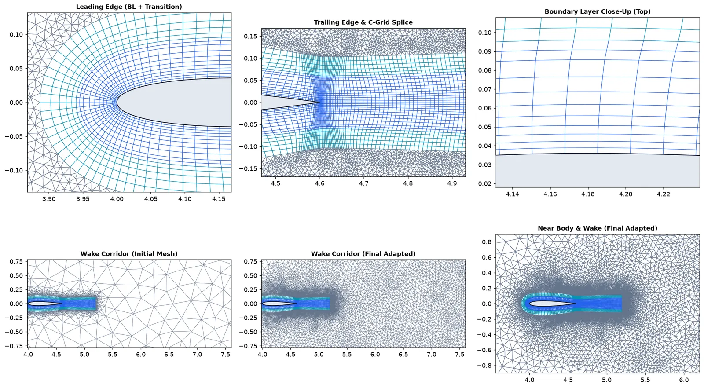
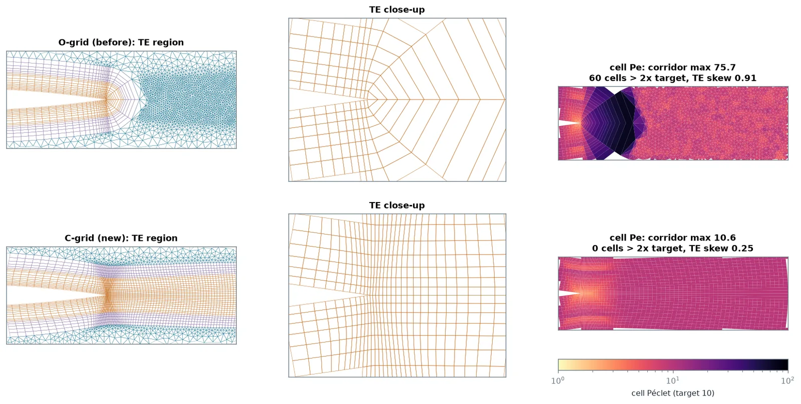
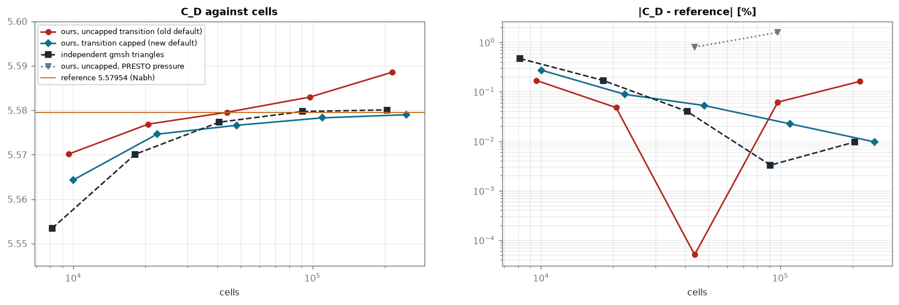
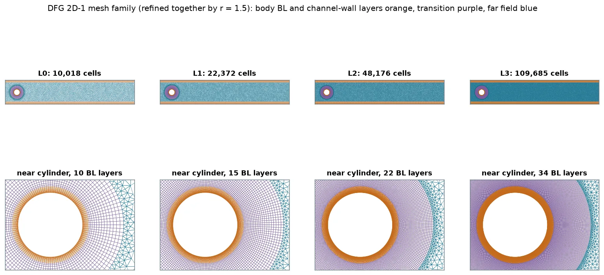
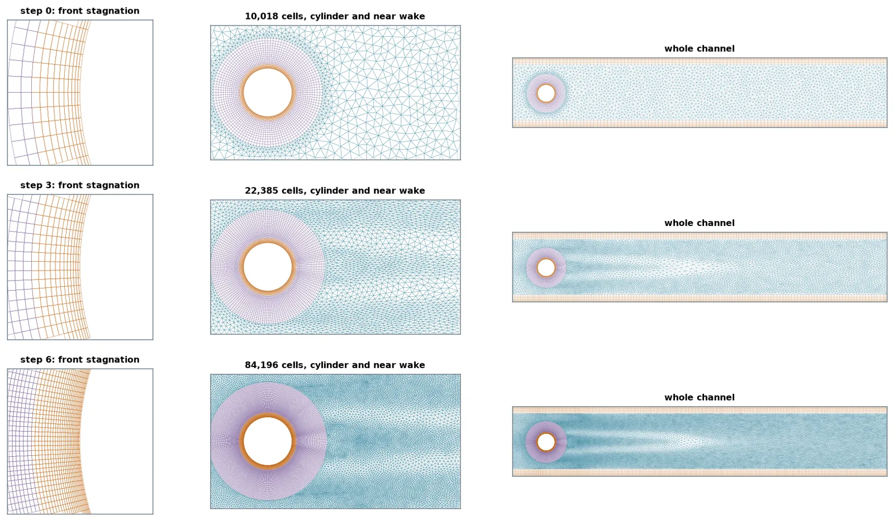
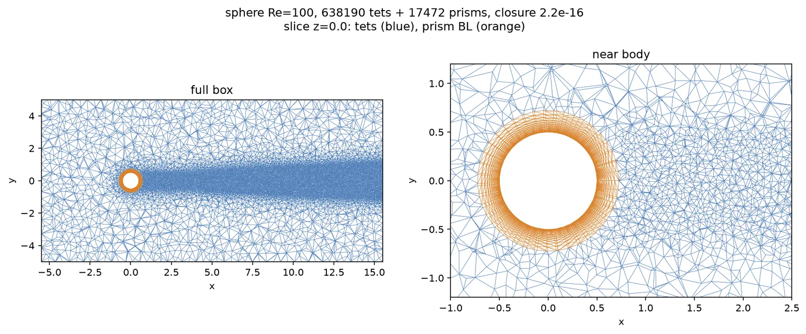

Own meshing & adaptation toolkit, 2026
Physics-informed 2D/3D CFD mesh generation & anisotropic adaptation
A deterministic hybrid multiblock mesh generator and metric-adaptation tool in Python that sizes boundary layers, transition rings, and wakes directly from Reynolds/Peclet scaling laws and refines them with MMG2D/3D — validated in ANSYS Fluent 26.1 and SU2 v8.5.0.

Why a physics-scaled mesher
Most of the time in a CFD study goes into the mesh, and most silent errors live there. Generators take sizes in metres, so boundary-layer thickness, first-cell height and wake width are guessed and adjusted by hand. When a refinement study does not converge, the cause is often one region that did not refine with the rest.
nextgen_mesher derives every size from dimensionless flow parameters instead: boundary-layer
thickness and outer gradient length from the Péclet number, first-layer height from a target y+
and flat-plate skin friction, the wake corridor from the flow direction. Scaling the geometry and velocity by
1024 gives the same mesh, scaled, to the bit. The longer-term goal is a mesher that adapts while the solution
develops, so the plan went in stages: a physics-based first mesh, then metric adaptation from the solution,
then goal-oriented adaptation.
What is in it
- Topology chosen by geometry. Blunt bodies get a structured O-grid boundary layer and transition ring. A sharp trailing edge switches to a C-grid whose layers run into the wake, which cut the wake-corridor cell Péclet number from 73.8 to 10.6 in the first study. Multi-element aerofoils and multi-body CAD sections cap each ring at 0.35× the local gap.
- 3D. Prism boundary layers extruded along smoothed normals with fold repair and layer dropping in narrow gaps, filled with gmsh tetrahedra.
- Adaptation. Solution-Hessian and flux-weighted metrics drive MMG2D/MMG3D, and cells that fail Fluent's orthogonal-quality floor are repaired locally.
- Exports and daily use. Fluent
.msh, SU2, CGNS, VTU and curved P2 meshes; a command-line tool, a web app and batch mode on one code path; cell-count estimates before meshing (0.82–1.20× actual); solver set-up files; 159 automated tests.

Why these test cases, and why two solvers
A mesher has no answer of its own; it can only be judged through a solver. I checked every result in ANSYS Fluent 26.1 and the open-source SU2 v8.5.0, so a mesh effect can be told apart from a solver effect. The cases go from easy to hard:
- DFG 2D-1 (cylinder in a channel, Re 20, steady). Its reference drag is known to five digits from a spectral solution, so errors of 0.01 % are visible. It tests whether a mesh family converges at its design order.
- DFG 2D-2 (same geometry, Re 100, vortex shedding). Features move, so it tests whether adaptation pays off when uniform refinement wastes cells.
- NASA TMR NACA 0012 (Re 6 × 106, k–ω SST). The industrial case: thin turbulent boundary layers, y+ ≈ 1, and a public reference grid.
- Sphere at Re 100, a flapped aerofoil and a transonic aerofoil for 3D, multi-element and shock cases.
What the steady benchmark proved
The first DFG 2D-1 family looked fine until the finest level, where drag drifted +0.16 % past the reference. An independent family built with plain gmsh did not drift, so the defect was in my mesher. The transition block grew at a fixed ratio to a fixed extent, leaving an outer ring that never refined, with cell aspect ratio up to 10. Capping each transition layer at the local tangential width restored second-order convergence: Fluent drag error falls 0.272 → 0.088 → 0.052 → 0.022 % and reaches −0.009 % at 247k cells (Richardson order 2.1, extrapolated value equal to the reference). SU2 on the 110k level gives −0.054 %.



When adaptation pays, and when it does not
Adapted meshes first sat 0.075 % high on DFG 2D-1 drag. Nine mesh variants later, the cause was the inlet, not the interior: MMG keeps boundary edges, so the inlet stayed at the coarse spacing and the parabolic inflow carried about 0.1 % too much flow. Equidistributing boundary edges fixed it. After that, adaptation matches uniform refinement on the steady case (42k adapted cells at −0.057 % against 48k uniform at −0.052 %), but does not beat it.
On the unsteady DFG 2D-2, adaptation does pay: all four Schäfer–Turek reference bands at 19k adapted cells against 43.9k on the fixed family. Two adaptive approaches failed: switching meshes between time intervals (every switch jolts the forces) and Fluent's native dynamic refinement (it stops refining at its cell cap). On the converged fixed meshes the maximum lift sits at 0.987, just below the 0.99–1.01 band, and I report it as a near miss.
The turbulent aerofoil: converged, and still wrong
On NACA 0012 the physics mesh gets lift right (α = 10°: −0.47 % against the TMR reference) but drag 9.1 % high in Fluent. A leading-edge spacing law from the stagnation pressure gradient removed a false stall at α = 15°. Hessian adaptation cut the α = 10° drag error from +9.1 % to +3.1 % for 2 % more cells.
To find what was left, I ran a three-level family in SU2 (104k / 179k / 331k cells). Drag error was +7.2, +6.1 and +6.3 %, with a grid-convergence index of 0.04 %. By the usual test that means converged, and I first concluded the gap was in the solver set-up or the turbulence model. The decisive check was simpler: run the identical Fluent set-up on NASA's own 897 × 257 grid. Drag error there is +1.95 %. The gap is in my mesh, in the pressure drag. Slower far-field growth explains about 40 % of it (+9.0 → +5.9 %); a quad wake does not help (+8.7 %). The remaining cause is still open.
A mesh family can converge to the wrong answer. Grid convergence shows that refinement no longer changes the result; it does not show that the mesh is right, because every level shares the same systematic choices. Running the same set-up on an independent reference grid is what separated mesh from model.

Other results and open limits
- Transonic aerofoil: on a y+ 1 mesh the density-based solver never settled, whatever the solver settings. An Euler mesh at y+ 100 converged (lift 0.3528–0.3530 over three steps). The fix was the mesh, not the solver.
- Flap at 20°: two different RANS solutions (lift 1.83 or about 1.5) depending on mesh partitioning, so it is not a mesh-convergence case. At 10° the flap stays attached and lift converges (GCI 0.4 %); drag is not yet asymptotic.
- 3D sphere across solvers: Fluent +1.0 %, while SU2 moves from +8.1 % to −2.2 % with the gradient method on the same mesh, so in 3D the solver choice matters as much as the mesh.
- Curved C-grid wake cuts fold the leading-edge boundary layer, so they stay off.
Takeaways
Sizing a mesh from flow physics works: on laminar benchmarks the mesher reaches reference accuracy with clean second-order convergence in two solvers. Adaptation is worth its cost where features move or are local, not on smooth steady flow. For turbulent external aerodynamics the mesher is not finished: it still carries a drag error against the reference grid, and I now know where to look (near-body pressure drag and far-field growth). The next step is two papers, a software paper and a methods paper, with the drag gap reported as an open limit.
Lessons learned
- Every region has to refine. When a family stops converging, look for the part of the mesh that kept its size. Here it was an outer transition ring.
- Converged is not correct. A tiny GCI on a family that shares a systematic error proves nothing. Rerun the same set-up on an independent mesh, ideally the reference grid.
- Be ready to reverse a conclusion. I had written “not the mesh” for the drag gap. One decisive run showed it was the mesh, and the notes now say so.
- Boundaries matter as much as the interior. A frozen inlet spacing produced a 0.1 % flux error that looked like an adaptation problem.
- Use two solvers. Fluent and SU2 agree on the laminar cases and disagree in 3D, which is information about the solvers, not the mesh.
- Sometimes the fix is the mesh, not the solver settings. The transonic case converged only after the wall spacing changed.